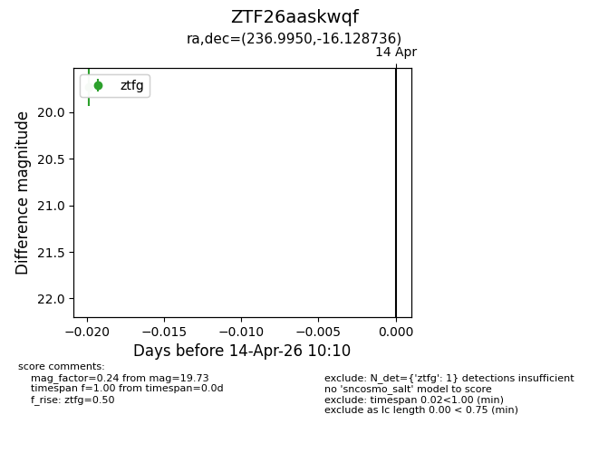
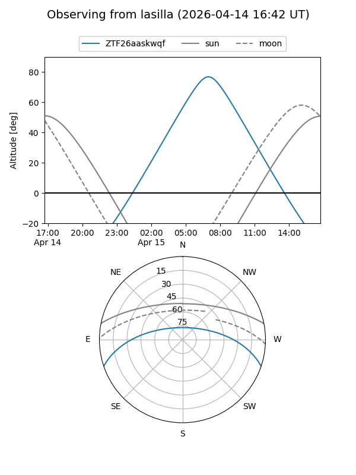
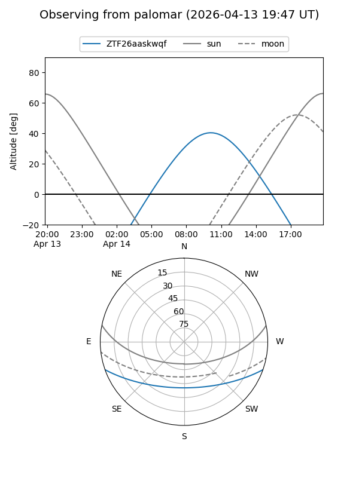

ZTF26aaskwqf
Target ZTF26aaskwqf at 2026-04-14 10:20
Aliases and brokers:
FINK: link
Lasair: link
ALeRCE: link
alt names
ZTF26aaskwqf (ztf,fink_ztf)
Coordinates:
equatorial (ra, dec) = 236.9950,-16.12874
equatorial (HMS+DMS) = 15:47:58.80,-16:07:43.45
galactic (l, b) = (352.9170,+29.13888)
Flags:
Photometry:
last ztfg=19.73
1 ztfg detections
Lightcurve

Visibility


Additional plots